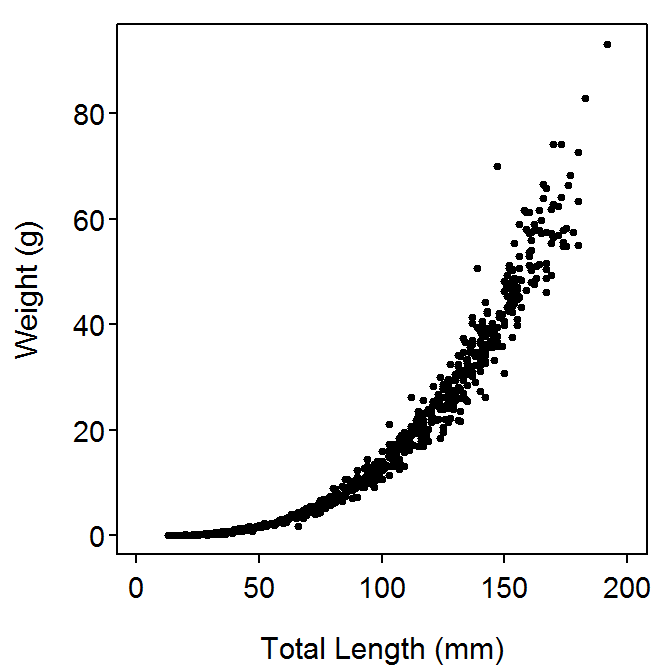
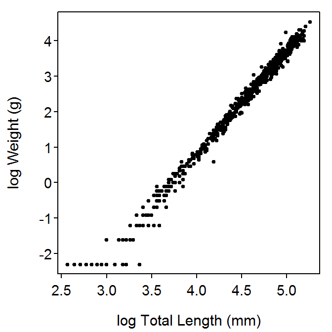

Weight-Length
Ogle’s Notes
Derek H. Ogle
Weight-Length Relationships
Modeling the relationship between length and weight of a species of fish has been considered a routine analysis for which the results do not warrant publication (Froese 2006) or has been scorned as being of little value (Hilborn and Walters 2001). However, the recent review of methods and the meta-analysis of a large number of length-weight relationships by Froese (2006) demonstrated that a synthetic analysis of length-weight relationships for a species can provide important insights into the ecology of that species.
The relationship between the length and weight of a fish is used by fisheries researchers and managers for two main purposes (Le Cren 1951). First, the relationship is used to predict the weight from the length of a fish. This is particularly useful for computing the biomass of a sample of fish from the length-frequency of that sample. Second, the parameter estimates of the relationship for a population of fish can be compared to average parameters for the region, parameter estimates from previous years, or parameter estimates among groups of fish to identify the relative condition or robustness of the population. By convention, this second purpose is usually generically referred to as describing the condition of the species.
Weight-Length Data
The required data for examining the length-weight relationship for a sample of fish is measurements of the length (\(L\)) and weight (\(W\)) of individual fish at the time of capture (e.g., Table 1). Any other data about individual fish, such as month or year of capture, are of capture, etc. can also be recorded.
Table 1: Length and weight measurements for a portion of Ruffe from the St. Louis River Harbor, 1992.
| month | day | year | individual | length | weight |
| 4 | 23 | 1992 | 1 | 90 | 9.3 |
| 4 | 23 | 1992 | 2 | 128 | 32.5 |
| 4 | 23 | 1992 | 3 | 112 | 19.0 |
| 4 | 23 | 1992 | 4 | 68 | 4.4 |
| 4 | 23 | 1992 | 5 | 56 | 2.1 |
| 4 | 23 | 1992 | 6 | 58 | 2.8 |
| \(\vdots\)} | \(\vdots\) | \(\vdots\) | \(\vdots\) | \(\vdots\) | \(\vdots\) |
Three types of length measurements are common in the fisheries literature Figure 1. Total length (TL) is the length from the most anterior to the most posterior point with the tail of the fish compressed to exhibit the longest possible length. Fork length (FL) is the length from the most anterior point to the anterior notch in the fork of the tail. For fish without a forked tail, the fork and total lengths are the same. The standard length (SL) is the length from the most anterior point to the posterior end of the caudal peduncle. Total length is the most common measurement in fisheries studies, as this is the measurement used in management decisions such as setting minimum lengths.

Figure 1: Demonstration of total, fork, and standard length measurements on a Bluegill.
Length measurements are often taken with the aid of a measuring board where the measuring “stick” is embedded into the bottom board and one end of this board is fit with a vertical end piece. The fish to be measured is placed on the bottom board such that the anterior point of the fish is against the vertical end piece and the measurement can be read directly from the embedded measuring stick (Figure 2). Length measurements are subject to very little measurement error (Gutreuter and Krzoska 1994).

Figure 2: Field measurements of length (left) and weight with a spring scale (right).
Two common weight measurements are used. The usual body weight is the weight of the fish as it was captured, whereas the dressed weight is the weight of the fish with the gills and entrails removed. Dressed weight is usually only used when measurements are reported from a commercial fishery.
Weight measurements can be made in the field on fresh specimens or in the lab on fresh-frozen specimens. Weight measurements in the field can be taken with tared spring or electronic balances (Figure 2). However, field measurements can be extremely variable due to differences in fish surface wetness, boat movements, wind, and other adverse environmental conditions (Gutreuter and Krzoska 1994). Substantial variability in weight measurements can occur when fish weigh less than 10% of a scale’s capacity (Gutreuter and Krzoska 1994). Thus, multiple sizes of scales should be taken into the field (Blackwell et al. 2000). Wege and Anderson (1978)} suggest that the accuracy of the scale should be $$1% of a fish’s body weight for use in relative weight calculations. Weight measurements on frozen fish were roughly 1-9% lighter than the measurements on the same fish when fresh, whereas length measurements were roughly 1-4% shorter on frozen then fresh fish for a variety of species (reviewed in Ogle (2009)).
Weight-Length Model
The relationship between the length and weight of a sample of fish tends to have two important characteristics. First, the relationship is not linear . This can be explained intuitively by thinking of length as a linear measure and weight as being related to volume. Thus, as the organism adds a linear amount of length, it is adding a disk of volume with a commensurate weight. Second, the variability in weight increases as the length of the fish increases (i.e., the scatter of the points increases from left-to-right in Figure 3. Thus, variability in weight among shorter fish is less then variability in weight among longer fish. Unfortunately, because of these two characteristics, length-weight data tends to violate the linearity and homoscedasticity (i.e., “constant variance”) assumptions of simple linear regression.

Figure 3: Length and weight of Ruffe from the St. Louis River Harbor, 1992.
These characteristics of length-weight data suggest that a two-parameter power function with a multiplicative error term should be used to model the length-weight relationship. Specifically, the model typically used is
\[ W_{i} = aL_{i}^{b}e^{\epsilon_{i}} \quad \quad \text{(1)} \]
where \(a\) and \(b\) are constants and \(\epsilon_{i}\) is the multiplicative error term for the \(i\)th fish. The length-weight model Equation 1 can be transformed to a linear model by taking the natural logarithms1 of both sides and simplifying,
\[ log(W_{i}) = log(a) + blog(L_{i}) + \epsilon_{i} \quad \quad \text{(1)} \]
Thus, with \(y=log(W)\), \(x=log(L)\), slope=\(b\), and intercept=\(log(a)\), Equation 2 is in the form of a linear model. In addition to linearizing the model, this transformation has the added benefit of making the errors additive and stabilizing the variances about the model (i.e., making the scatter around the line nearly constant for all length measurements; Figure 4). With this linearization and stabilization, the usual linear regression methods can be used to fit the relationship between \(log(W)\) and \(log(L)\).

Figure 4: Natural log transformed total length and weight of Ruffe from the St. Louis River Harbor, 1992. Note that the “flaring” of the values in the lower-left corner of the plot is due to minimum weight limitations of the measuring scale.
It should be noted that, with the example in Figure 4, the variability on the log scale appears greater for ``small’’ fish. This is because the scale used to measure these fish lacked the required precision to distinguish weights of small fish over a wide length range. It is apparent that fish with a log weight of less than -0.5 should be eliminated from this analysis because of scale imprecision for these fish.
Special Inferences about Slope
If a fish grows without changing its shape or its density then the fish is said to exhibit isometric growth. In this case, the volume of the fish is proportional to any linear measure of its size. If weight is taken as a surrogate of volume (which requires assuming a constant density) and length as the linear measure, then the modeled relationship between length and weight, Equation 1, will have \(b=3\) under isometric growth. Isometric growth in fish is rare (Bolger and Connolly 1989, McGurk (1985)). If a fish changes shape or density as it grows, then \(b\neq3\) in Equation 1, and the fish is said to exhibit allometric growth. If \(b>3\) then the fish tends to become more “plumper” as the fish increases in length (Blackwell et al. 2000).
A test of whether the fish in a population exhibit isometric growth or not can be obtained by noting that \(b\) is the estimated slope from fitting the transformed length-weight model. The slope is generically labeled with \(\beta\) such that the test for allometry can be translated into the following statistical hypotheses:
- \(H_{0}:\beta=3 \quad \Rightarrow H_{0}:\) “Isometric growth”
- \(H_{A}:\beta\neq3 \quad \Rightarrow H_{A}:\) “Allometric growth”’
Hypothesis tests regarding model parameters can be obtained with a t-test using
\[ t = \frac{\hat{\beta}-\beta_{0}}{SE_{\hat{\beta}}} \]
where \(\hat{\beta}\), \(SE_{\hat{\beta}}\) and the df are from the linear regression results and \(\beta_{0}\) is the specified value in the \(H_{0}\). Nearly all statistical packages, R included, print the \(t\) and corresponding \(p-value\) for \(H_{0}:\beta=0\) by default, but not for any hypothesized value other than zero. Thus, the test statistic and p-value for the test of isometry must often be calculated “by hand.”
Reproducibility Information
- Compiled Date: Tue Jan 02 2018
- Compiled Time: 4:16:02 PM
- R Version: R version 3.4.3 (2017-11-30)
- System: Windows, i386-w64-mingw32/i386 (32-bit)
- Base Packages: base, datasets, graphics, grDevices, methods, stats, utils
- Required Packages: FSA, FSAdata, captioner, knitr, dplyr, magrittr and their dependencies (assertthat, bindrcpp, car, digest, dunn.test, epitools, evaluate, glue, gplots, graphics, grDevices, highr, lmtest, markdown, methods, pkgconfig, plotrix, plyr, R6, Rcpp, rlang, sciplot, stats, stringr, tibble, tools, utils, yaml)
- Other Packages: bindrcpp_0.2, captioner_2.2.3, dplyr_0.7.4, FSA_0.8.18, FSAdata_0.3.6, knitr_1.17, magrittr_1.5
- Loaded-Only Packages: assertthat_0.2.0, backports_1.1.2, bindr_0.1, compiler_3.4.3, digest_0.6.13, evaluate_0.10.1, glue_1.2.0, htmltools_0.3.6, pkgconfig_2.0.1, plyr_1.8.4, R6_2.2.2, Rcpp_0.12.14, rlang_0.1.4, rmarkdown_1.8, rprojroot_1.3-1, stringi_1.1.6, stringr_1.2.0, tibble_1.3.4, tools_3.4.3, yaml_2.1.16
- Links: Script / RMarkdown
References
Blackwell, B. G., M. L. Brown, and D. W. Willis. 2000. Relative weight (Wr) status and current use in fisheries assessment and management. Reviews in Fisheries Science 8:1–44.
Bolger, T., and P. L. Connolly. 1989. The selection of suitable indices for the measurement and analysis of fish condition. Journal of Fish Biology 34:171–182.
Froese, R. 2006. Cube law, condition factor and weight-length relationships: History, meta-analysis and recommendations. Journal of Applied Ichthyology 22:241–253.
Gutreuter, S., and D. J. Krzoska. 1994. Quantifying precision of in situ length and weight measurements of fish. North American Journal of Fisheries Management 14:318–322.
Hilborn, R., and C. J. Walters. 2001. Quantitative fisheries stock assessment: Choice, dynamics, & uncertainty. Page 570Second. Chapman & Hall, New York, NY.
Le Cren, E. D. 1951. The length-weight relationship and seasonal cycle in gonad weight and condition in the Perch (Perca flavescens). Journal of Animal Ecology 20:201–219.
McGurk, M. D. 1985. Effects of net capture on the postpreservation morphometry, dry weight, and condition factor of Pacific herring larvae. Transactions of the American Fisheries Society 114:348–355.
Ogle. 2009. The effect of freezing on the length and weight measurements of ruffe (Gymnocephalus cernuus). Fisheries Research 99:244–247.
Wege, G. W., and R. O. Anderson. 1978. Relative weight (Wr): A new index of condition for Largemouth Bass. Pages 79–91 in G. D. Novinger and J. G. Dillard, editors. New approaches to the management of small impoundments. American Fisheries Society.
Natural logarithms are used throughout this course and will be referred to simply as “logarithms” and will be abbreviated with “log”.↩